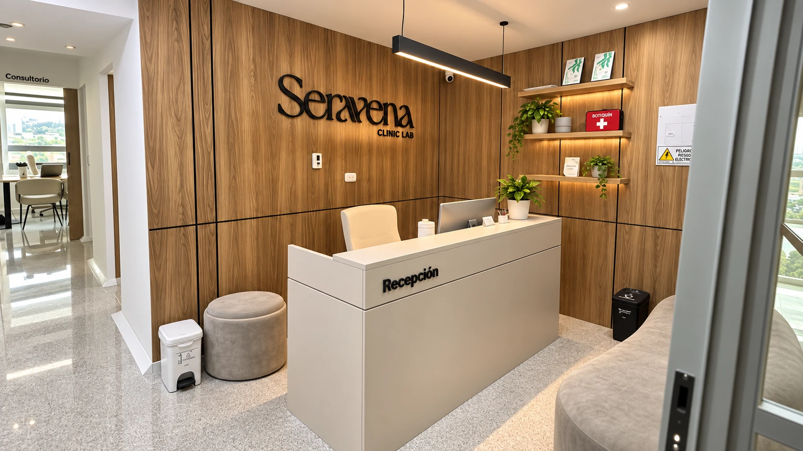
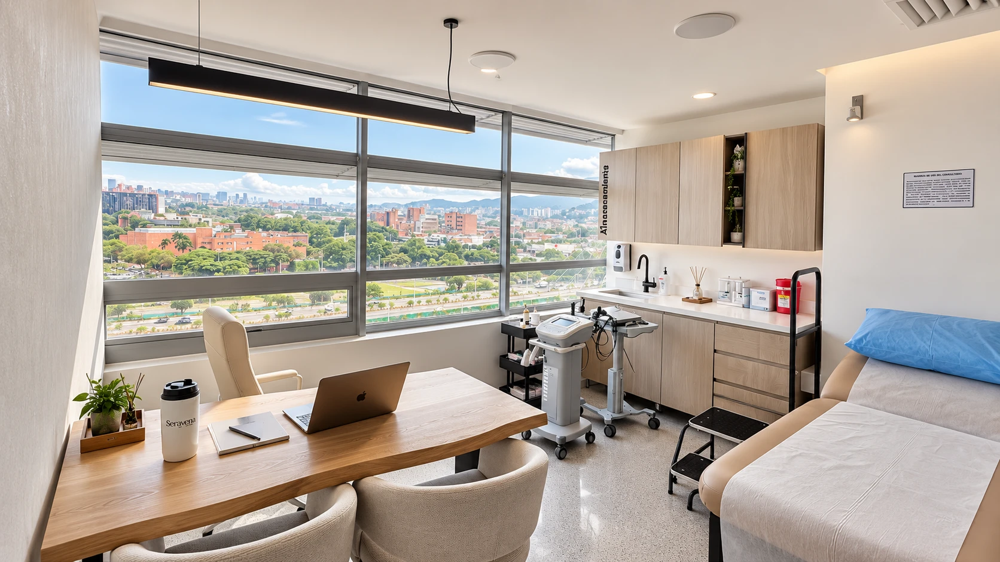

Seravena es una clínica en El Poblado dedicada al lipedema y a la salud vascular. Te valora un médico internista vascular, con eco doppler, y te acompaña un equipo completo.
Desliza para explorar ↓En corto
No hay un ranking oficial. La mejor clínica de lipedema es la que te diagnostica bien antes de proponerte un tratamiento: te examina, descarta otras causas con eco doppler, te dice quién te atiende, habla de manejo y no de cura, y te acompaña en el tiempo. En Medellín, Seravena trabaja así: es una clínica en El Poblado dedicada al lipedema y a la salud vascular, donde te valora el Dr. José David Puerta Rojas, médico internista con subespecialidad en medicina vascular.
Cómo elegir
Estos son los seis puntos que recomendamos revisar en cualquier clínica, sea la nuestra o no. Al lado, lo que vas a encontrar en Seravena.
Historia clínica, examen físico de las piernas y eco doppler venoso para descartar un componente venoso o linfático que también haya que atender. El lipedema se diagnostica en consulta, no por fotos ni por WhatsApp.
Medicina vascular, nutrición, deporte, compresión y psicología coordinados en un mismo plan. El objetivo es aliviar los síntomas y que vivas mejor.
Te valora el Dr. José David Puerta Rojas, médico internista con subespecialidad en medicina vascular. Puedes conocer su perfil antes de venir.
No prometemos curas. El lipedema es una condición crónica: el manejo busca controlar los síntomas, sostener el tejido y frenar el avance.
Antes de empezar te explicamos qué incluye el plan, en qué orden y cuánto cuesta cada parte. Puedes llevarte la propuesta y decidir en casa, sin presión.
El tratamiento no termina cuando sales de la consulta. Hacemos seguimiento para ajustar lo que haga falta, resolver tus dudas y revisar cómo responde tu cuerpo.
Lee la guía completa para elegir clínica, con banderas rojas →

Quién te atiende
Médico internista · Subespecialista en medicina vascular
Conoce su perfil →El lipedema no se trata desde una sola especialidad. Según lo que necesites, en tu plan participan:
Tu primera cita
Conversamos sobre tus síntomas y tu historia: cuándo empezaron los cambios, cómo han evolucionado, si hay antecedentes familiares y qué has intentado hasta ahora.
El diagnóstico del lipedema es clínico y se construye con un examen físico cuidadoso. La ecografía sirve de apoyo para descartar otras causas de hinchazón.
Con el diagnóstico claro definimos qué corresponde en tu caso, en qué orden y qué es razonable esperar. Sin garantías de catálogo.
“Me realicé el plan integral para lipedema y me fue súper bien, ¡gracias Seravena!”
“Súper recomiendo el tratamiento para el manejo del lipedema.”
Dónde estamos
En corto
No hay un ranking oficial. La mejor clínica de lipedema es la que te diagnostica bien antes de proponerte un tratamiento: te examina, descarta otras causas con eco doppler, te dice quién te atiende, habla de manejo y no de cura, y te acompaña en el tiempo. En Medellín, Seravena trabaja así: es una clínica en El Poblado dedicada al lipedema y a la salud vascular, donde te valora el Dr. José David Puerta Rojas, médico internista con subespecialidad en medicina vascular.
En Seravena, Torre Médica Salud Vegas, Calle 2 Sur #46-159, consultorio 1316, en El Poblado. Allí valoramos y manejamos el lipedema con un enfoque conservador y multidisciplinario. Agendas por WhatsApp al +57 305 208 8204, sin necesidad de remisión.
El Dr. José David Puerta Rojas, médico internista con subespecialidad en medicina vascular. Hace la valoración clínica, se apoya en el eco doppler y coordina el plan con el resto del equipo: nutrición, deporte, psicología y acompañamiento clínico.
No. Seravena no tiene convenio con ninguna EPS. Lo que ofrecemos es una valoración particular directa, sin remisión ni papeleo previo, que agendas por WhatsApp.
El manejo en Seravena es conservador y multidisciplinario. La cirugía (liposucción) existe como opción, pero se valora caso a caso, cuando puede mejorar los síntomas, y nunca debería ser lo primero que te ofrecen sin una valoración completa.
Hoy no existe un tratamiento que cure el lipedema: es una condición crónica. Lo que sí existe es un manejo que puede reducir el dolor, la pesadez y la hinchazón, frenar el avance y ayudarte a vivir mejor.

Da el primer paso
Escríbenos, cuéntanos qué sientes y te damos una cita con el Dr. Puerta en El Poblado.